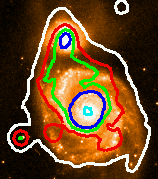

This generates some automatic levels and performs the contouring. The levels actually used are shown in the Level entries. To change these values just edit the entries and press <Return> or the Draw Contours button (pressing <Return> in the entry field just redraws that contour).

Either display the other image in another window and select it from the Displayed image: menu, or enter the name of the image file into the Other image: field. Now enter some appropriate contour levels and press Draw Contours.
NOTE: images entered in the Other image: field always override displayed images. Clear this field to use a displayed image.
If the images both have sky coordinates then this system will be used for alignment, otherwise the images will be assumed to have the same pixel coordinates. If you are using sky coordinates which cover large areas of sky or your images are not axes aligned then you may need to choose the Options menu and select the Draw contours using geodesics item, you may also need to select the Region tab and choose Whole of image for the contour region.
To contour a cube over the displayed image (which could be a slice from a cube itself) you must display the cube in another window and select that window in the Displayed image: menu. Now when you press Draw contours all the slices of the cube will be contoured, one-by-one, over the image. The coordinate of the slice will be shown at the top of the main window (this is part of the key).
To change the speed of the slice selection, change the range of slices used, or increase the step between slices you must use the controls of the Animation section in the cube toolbox associated with the other window.
To not clear the contours between slices unselect the Cube: clear each slice item in the Options menu. Just contouring the current slice can also be performed by unselecting Cube: step through.
To pause contouring during long operations (especially comparing cube slices) you can press the Space key while the keyboard focus is in the contouring toolbox. Pressing Space again continues. To permanently halt contouring press the Esc key. Note these will only take effect after a contour has completed, so may take some time to respond.
Choose the File menu in the main window and select Print.... This should create a new dialog window. Just choose the appropriate options.
Choose the File menu and select the Save configuration... item. When the file selection dialog appears choose a filename.
To reload a configuration choose the Read configuration... item.
Each contour has its own thickness, colour and style. The menu associated with each level show the possible values, just select the one you want. Note these options are applied immediately, there is no need to redraw the contours. The styles available are filled line (0), dotted (1), dashed (2) and dot-dashed (3).
Press the Generate tab, select the Algorithm menu and choose the magnitude item. Now enter the value of a reference point on your image and an increment in magnitudes. Finally press the Generate button.
I use this option by entering a value somewhat above the sky background and then setting the interval to say -0.5 (negative to get increasing data values). The formula used is:
(-0.4 * i * step_value)
contour_level_i = start_value * 10
For i = 0 up to number of contours required.
Select the Region tab and press the Whole of image: button, or alternatively increase the X and Y display fractions.
NOTE: it is much quicker to contour part of an image, this also uses less memory.
Press the Key tab. This provides a range of options for changing the key title, key position, colour etc. Note that the key setup is saved as part of the configuration, so can be restored.
To move the key just place your pointer over it, press mouse button 1 and hold it down, now move the pointer and the key will follow.
To remove the key select the Key tab and toggle the Display key: button.
To do this you need to create a new contour toolbox. Just select the File menu and choose the New window item.
To do this you use the axis grid toolbox. Just select the Image-Analysis menu in the main window and choose the Overlay axes grid item. To match the regions drawn choose the Scaling tab and select the Whole of image: button, now make the display fractions the same size as used in the contour toolbox.